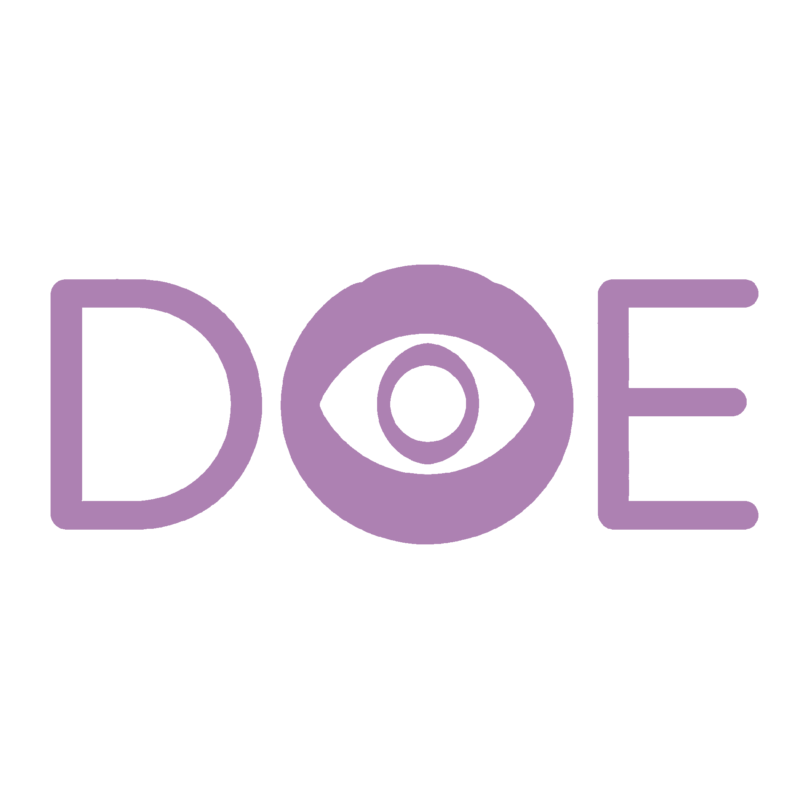

恐龙眨眼行为研究协会｜Dinosaur Ocular Eyelid Research（DOE）
我们相信，眨眼是生命延续的密码
眨眼是湿润、清洁、防御、交流的基础生命行为，绝非无意义动作。协会眨眼的生物，从未真正消失。
恐龙眼窝结构、巩膜环、眼睑附着痕迹，与现代鸟类高度同源。眨眼机制，在恐龙身上真实存在。
鸟类是恐龙的直系后代，它们仍在眨眼、繁衍、遍布全球。恐龙以“鸟”的形态，活在今天。
来自化石与现代生命的共同印证
我们研究眨眼，为了重新认识恐龙
✅ 重建恐龙眼部行为与生态
✅ 联结史前与现代生命的演化脉络
✅ 打破“恐龙已灭绝”的认知误区
✅ 推动古生物学与演化生物学跨界研究
与我们一起，看见活着的恐龙